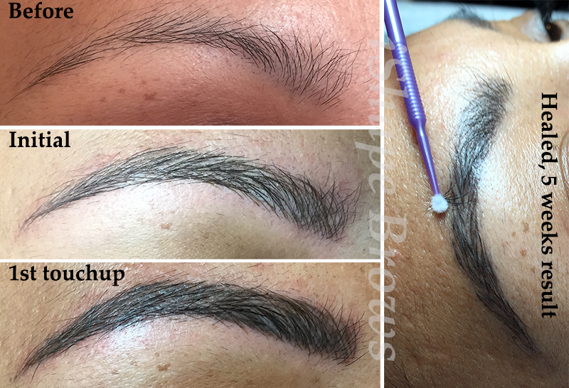
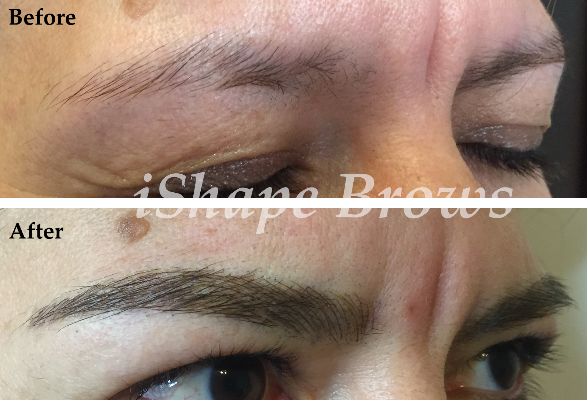
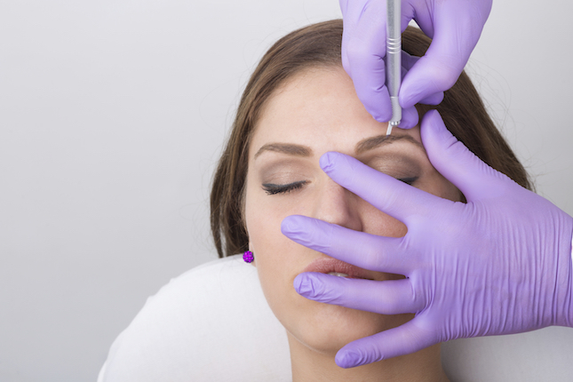
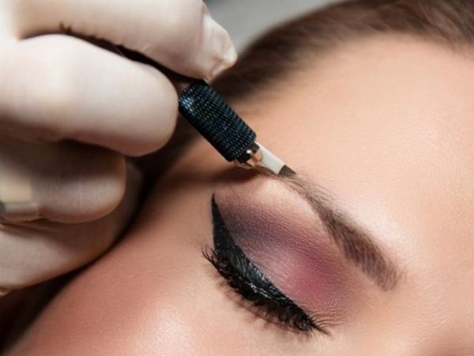

Here in Las Vegas - Call or text me at (702) 850-3484
-

- 
- 
- 
-
MicrobladingOpen or Close

What is Microblading?
Microblading (or eyebrow embroidery) is a relatively new, manual method which does not use a permanent makeup machine. Manual Microstroking, sometimes referred to as Microblading, Brow Micropigmentation, Manual Technique, Hand Method Eyebrow Permanent Makeup, Feather Brows, 3D-6D Brows, Cosmetic Tattooing and Eyebrow Embroidery, originated in Asia and has become very popular in the last few years all across the world.
How is it done?
Microblading is done by using a unique hand instrument with a small row of very fine needles that deposit pigment into the dermis with slicing, feathering strokes. The pigment is implanted in the basal membrane, which divides the epidermis from the Dermis layer of the skin. This creates very crisp, fine hair strokes that don't blur after healing like you would experience with a traditional permanent makeup machine.
Does it hurt?
This is designed to be a gentle procedure with minimal discomfort. The degree of discomfort will depend on several factors, such as if you opt for aesthetics, the location of the treatment, and your pain threshold. A numbing cream is applied before the procedure. In the beginning, you will feel a scratching feeling while we are making the shape and design of the brow. A numbing gel is then applied which is absorbed into the skin within a few seconds. Once the gel has absorbed you will have very little feeling.
-
ServicesOpen or Close
What is the typical cost?
Remember that you do get what you pay for! Competitors may charge less, but this requires a higher price tag. Brows frame the face so it is critical they are perfect.
- Free Consultation - With a refundable (except for no-shows) $25 deposit. (More details about the deposit can be found under Initial Consultation.)
- Initial Treatment for brows ranges between $400-600, consult required (including 1st touch-up 4-6 weeks after the initial treatment)
- Touch up additional fee if 1st touch-up appointment is missed-$60
- Yearly touch-up- $300-450 (pro-rated if you come in before or after a year)
- Enhancement strokes (Adding strokes to an existing treatment)-$200-300
- Full Brow reconstruction (When natural brows are minimally pre-existing and camouflaging tattoos)-$500 - 800
-
Important InformationOpen or Close
Non-Candidates:
- Pregnancy or nursing
- Diabetic patients
- Skin diseases
- Directly after Botox treatment (after 2 months is allowed)
- Use of Accutane, Isoltretinoin, or other retinoids (after 6 months is allowed)
- If you have a pacemaker, this manual method can be used, but any machine use is not allowed.
- Very sensitive and pain intolerant
- Sunburn or frostbitten (allowed after symptoms are gone)
- Seborrhea Dermatitis
- Excessive sebum, oily skin
- Problem skin broken capillaries
- Acne
- Moles
- Keratosis
- Very dry or peeling skin
Initial Consultation:
- We provide a free consultation, a $25 deposit is required, but will be refunded if you decide not to receive treatment.
- If you miss your free consultation, without at least 24 hour notice, the deposit is not refunded.
- If you choose to do the treatment, then the $25 is applied toward the cost of the treatment.
- The consultation will be approximately 30 minutes; this will not be your day of treatment.
- Consent forms will be emailed to you, which must be completed and brought with you to your consultation.
- Patch Test must be completed 48 hours before your treatment, or you can sign a waiver on the day of your treatment.
- We draw the brow design in pencil so you get an idea of shape and form.
- We take a photo of you so we can study the symmetry of your features. No one is exactly the same, and what we see as your ideal brow might not be what you want, we want to achieve your perfect brow. Our goal is to obtain symmetry and communicate realistic expectations. Please remember we can’t make you look like your favorite celebrity, we are brow artists not plastic surgeons. Miracle beautiful brows we can do. Be your own beautiful!
Before the Treatment:
- Do not take Aspirin, Niacin, Vitamin E or Ibuprofen 24 hours before.
- Do not drink coffee, alcohol or energy drinks on the day of treatment.
- If you tint your brows, do it one day prior to treatment
- Do not tan or sunbathe 3 days before treatment. The tan will exfoliate, taking color with it as it fades.
- No waxing! If you tint or wax your eyebrows, you must complete those treatments at least 3 days before the microblading treatment.
- No chemical peels, dermabrasion, mesotherapy or any other intense treatments. This will cause skin cells to rejuvenate faster which will result in skin irritation. We recommend any of these to be done 2-3 weeks before microblading.
- Fix and/or wash your hair before the treatment. You will not be able to have direct contact with water on the area for 7 days.
- Please note that you will be more sensitive during your menstrual cycle.
The Day of Treatment:
- Please arrive least 10 minutes before your appointment. Late arrival will not be accepted, please call us; it can lead to your treatment being postponed to another day.
- We clean your brow area with sterile, hygienic pads and draw the brow form on to your skin.
- A photo will be taken, often times a photo will show defects or issues that may need to be addressed.
- We use a sterile microblading tool and disposable blade during your procedure.
- We use EU Regulated Permanent Makeup high quality pigments, specially manufactured for microblading.
-
ContactOpen or Close
For any further information please feel free to contact me via phone or email!
- Tel: (702) 850-3484
- Email: ishapebrows@gmail.com
- Location: 7575 W Washington Ave Ste 123
Las Vegas, NV 89128
(On Washington and Buffalo, next to Trader Joe's)
© 2016 - iShape Brows